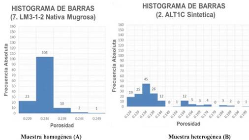
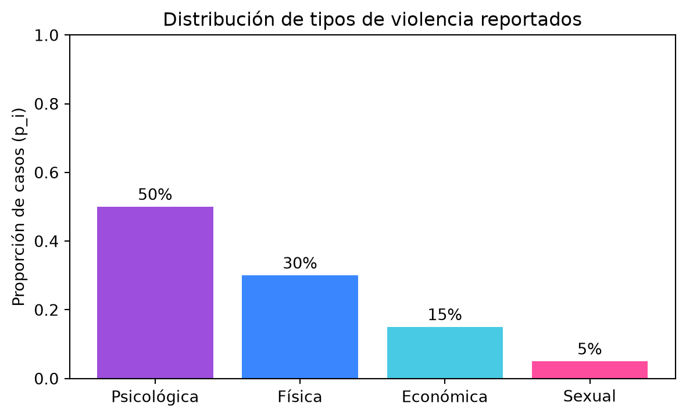
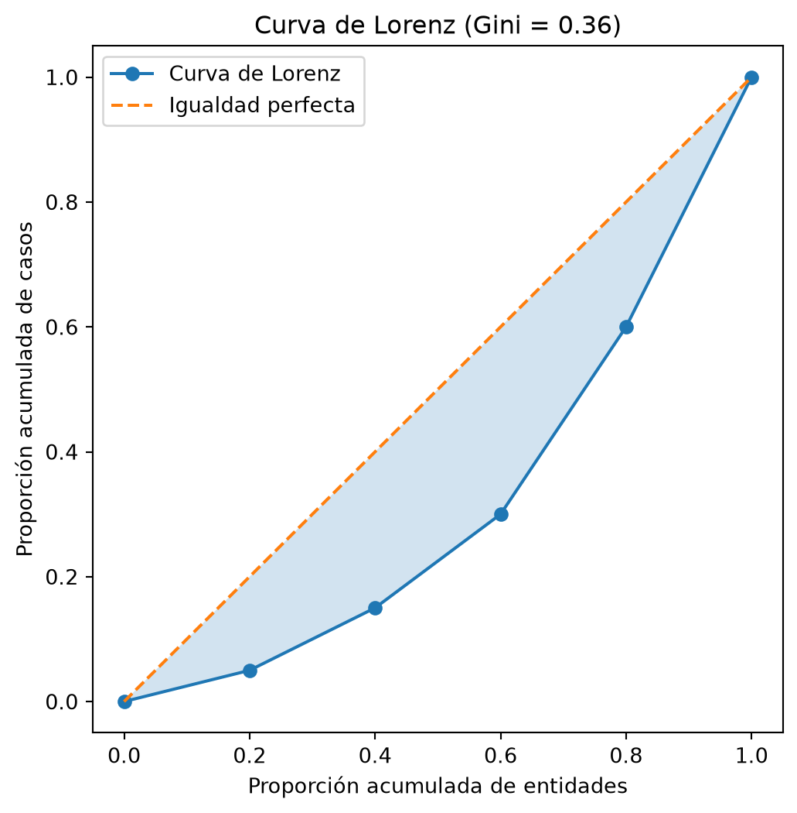

- Psicológica : 50 casos
- Física : 30 casos
- Económica : 15 casos
- Sexual : 5 casosArquitectura, Frameworks, Preprocesamiento y EDA sobre Violencia contra las Mujeres
2026-09-20
En la Práctica 3 se dejaron los datos limpios, sin duplicados, con tipos correctos en data/data-processed/.
El siguiente paso natural en minería de datos es describir cuantitativamente esos datos antes de modelar: es el rol de la estadística descriptiva dentro del Análisis Exploratorio de Datos (EDA).
No se vuelve a descargar ni reestructurar el proyecto: se extiende la arquitectura ya existente.
Concentración — ¿qué proporción del total se acumula en una fracción pequeña de las unidades de análisis? Herramienta clásica: curva de Lorenz y coeficiente de Gini.
Heterogeneidad — ¿qué tan mezcladas o diversas son las categorías? Herramientas: IQV, Gini-Simpson, entropía de Shannon.
Uno mide desigualdad en cómo se reparte una cantidad; el otro mide diversidad entre categorías.
Note
El análisis debe hacerse con rigor técnico y responsabilidad ética:
Localización — dónde se “centra” la distribución
Variabilidad — qué tan dispersos están los datos
Mientras que la varianza evalúa dispersión numérica, estas medidas aplican a variables cualitativas (categóricas).
Responden a una pregunta central:
¿Los datos se aglutinan en una sola categoría dominante (baja heterogeneidad) o están repartidos de forma equilibrada entre todas las opciones (alta heterogeneidad)?
Los cimientos matemáticos: Para calcular qué tan mezclados están los datos, las fórmulas utilizan dos bloques básicos:

\[\text{IQV} = \frac{k\left(1 - \sum_{i=1}^{k} p_i^2\right)}{k - 1}\]
\[\text{GS} = 1 - \sum_{i=1}^{k} p_i^2\]
\[H = -\sum_{i=1}^{k} p_i \log_2(p_i), \qquad 0 \le H \le \log_2(k)\]
Usa Entropía / Gini-Simpson / IQV cuando… La pregunta es ¿qué tan mezcladas o diversas son las categorías? Ejemplo: tipo de violencia, modalidad, relación con el agresor
Usa el coeficiente de Gini / curva de Lorenz cuando… La pregunta es ¿qué proporción del total se concentra en pocas unidades? Ejemplo: casos de violencia por entidad federativa
Note
Si aplicas ambas a la misma variable categórica (cada categoría como “unidad”, su frecuencia como la “cantidad” a repartir), obtienes dos lecturas complementarias: la entropía dice qué tan mezclada está; el Gini sobre esas mismas frecuencias dice qué tan desigual es esa mezcla.
Imaginemos que analizamos un subconjunto de 100 casos reportados de violencia. ¿Están concentrados en un solo tipo o vemos una mezcla de todas las formas de violencia?
- Psicológica : 50 casos
- Física : 30 casos
- Económica : 15 casos
- Sexual : 5 casosObservación inicial
A simple vista notamos que la violencia “Psicológica” acapara la mitad de los casos (50), mientras que la “Sexual” es la minoría (5). Esto ya nos indica que no hay un balance perfecto.
Todas las fórmulas de heterogeneidad necesitan convertir frecuencias absolutas a proporciones (\(p_i\)) y, fundamentalmente, elevar esas proporciones al cuadrado (\(p_i^2\)).
¿Por qué al cuadrado? Porque penaliza fuertemente a las categorías minoritarias y recompensa a las mayoritarias, revelando qué tan dominante es el pico de la distribución.
Proporciones (p_i): [0.5 0.3 0.15 0.05]
Proporciones al cuadrado (p_i^2): [0.25 0.09 0.0225 0.0025]
Suma de p_i^2 = 0.365▶ Si todos los casos estuvieran en “Psicológica”, la suma sería 1.
▶ Si hubiera 25 casos de cada tipo, la suma sería 0.25 (lo mínimo posible).
▶ Nuestro 0.365 está en un punto intermedio.
Gini-Simpson (\(1 - \sum p_i^2\)) Mide la probabilidad de que, al tomar 2 reportes al azar, sean de tipos de violencia distintos.
Gini-Simpson = 0.6350(Hay un 63.5% de probabilidad de que dos víctimas al azar hayan sufrido distintos tipos de violencia).
Índice de Variación Cualitativa (IQV) Ajusta el valor anterior usando el número de categorías (\(k=4\)) para darnos una métrica de 0 a 1 (donde 1 es la máxima mezcla posible).
IQV = 0.8467(Nuestros datos alcanzan casi el 85% de la máxima diversidad posible).
Fíjate que IQV es simplemente Gini-Simpson reescalado: \(\text{IQV} = \frac{k}{k-1}\,\text{GS}\).
Si te digo el tipo de violencia de un caso elegido al azar, ¿qué tan “sorprendido” te vas a llevar?
Pero la sorpresa de una sola categoría no basta: necesitamos un solo número que resuma a las 4 categorías juntas. Para eso, Shannon promedia la sorpresa de cada categoría, ponderándola por qué tan seguido ocurre.
Primero calculamos \(-\log_2(p_i)\) para cada categoría: entre menos frecuente es un tipo de violencia, más bits de sorpresa aporta si aparece.
Psicológica p_i=0.50 -log2(p_i) = 1.0000 bits
Física p_i=0.30 -log2(p_i) = 1.7370 bits
Económica p_i=0.15 -log2(p_i) = 2.7370 bits
Sexual p_i=0.05 -log2(p_i) = 4.3219 bits“Sexual” (5% de los casos) sorprende casi 4.3 bits si aparece; “Psicológica” (50% de los casos) apenas sorprende 1 bit, porque ya la esperábamos.
Ahora multiplicamos la sorpresa de cada categoría por \(p_i\): así las categorías raras (mucha sorpresa, pero ocurren poco) no dominan el resultado, y las comunes (poca sorpresa, pero ocurren mucho) sí pesan.
Psicológica p_i * (-log2 p_i) = 0.5000
Física p_i * (-log2 p_i) = 0.5211
Económica p_i * (-log2 p_i) = 0.4105
Sexual p_i * (-log2 p_i) = 0.2161
Suma de todas las contribuciones -> H = 1.6477 bits\(H\) es literalmente la suma de esas 4 contribuciones: no es una fórmula misteriosa, es un promedio ponderado de “qué tan sorprendente es cada categoría”.
Entropía (H) = 1.6477 bits
Entropía Máxima = 2.0000 bits
H / H_max = 0.8239 (82.4%)\(H_{max} = \log_2(k)\) es la entropía que tendríamos si las 4 categorías fueran igual de probables (25% cada una): ahí ninguna te da pistas de antemano, así que la sorpresa promedio es máxima.
La entropía relativa (\(H/H_{max}\)) nos dice que tenemos el 82.4% de la incertidumbre que tendríamos en ese escenario perfectamente balanceado.

La barra de “Psicológica” domina visualmente el resto — la misma historia que cuentan GS=0.635, IQV=0.847 y H/H_max=0.824, pero ahora se puede ver de un vistazo.
| Índice | Valor | ¿Qué significa en la realidad? |
|---|---|---|
| Gini-Simpson | 0.635 | Probabilidad moderada-alta de cruzar víctimas con vivencias diferentes. |
| IQV | 0.847 | La distribución está al 85% de ser perfectamente heterogénea. |
| Entropía (Relativa) | 0.824 | Tenemos un 82% de incertidumbre al predecir el tipo de violencia del siguiente caso. |
| Entropía de Shannon (heterogeneidad) | Gini (concentración) | |
|---|---|---|
| Mide | Diversidad / incertidumbre entre categorías | Desigualdad en cómo se reparte una cantidad |
| Rango | \(0\) a \(\log_2(k)\) | \(0\) a \(1\) |
| Pregunta | ¿Qué tan mezcladas están las categorías? | ¿Qué proporción se concentra en pocas unidades? |
| Origen | Teoría de la información (1948) | Estadística económica (1912) |
Responde: ¿qué fracción de una cantidad total (casos de violencia) se acumula en una fracción pequeña de las unidades (entidades federativas)?
Construcción de la curva:
Misma herramienta que usa la economía para medir desigualdad del ingreso.
\[G = \frac{2\sum_{i=1}^{n} i\, x_{(i)} - (n+1)\sum_{i=1}^{n} x_{(i)}}{n\sum_{i=1}^{n} x_{(i)}}, \quad x_{(i)} \text{ ordenado ascendentemente}\]
Casos reportados (hipotéticos) en 5 entidades, ya ordenados de menor a mayor:
Entidad E: 5 casos
Entidad D: 10 casos
Entidad C: 15 casos
Entidad B: 30 casos
Entidad A: 40 casos
Total: 100Vamos entidad por entidad, sumando los casos como si fueran llegando en fila. En cada paso preguntamos: ¿cuántos casos llevamos acumulados hasta aquí?
Entidad Casos Acumulado Prop. acum.
E 5 5 0.05
D 10 15 0.15
C 15 30 0.30
B 30 60 0.60
A 40 100 1.00Al llegar a la última entidad, el acumulado siempre coincide con el total (100). Eso es justo lo que confirma que no se nos perdió ningún caso en el camino.
Numerador = 180
Denominador = 500
Coeficiente de Gini = 0.360\[\text{Numerador} = 2\sum_{i=1}^{n} i\,x_{(i)} - (n+1)\sum_{i=1}^{n} x_{(i)}\]
Cada entidad se multiplica por su posición en el orden (1 = la que menos casos tiene, 5 = la que más): así, las entidades con más casos pesan más.
Entidad E: posición 1 x 5 casos = 5
Entidad D: posición 2 x 10 casos = 20
Entidad C: posición 3 x 15 casos = 45
Entidad B: posición 4 x 30 casos = 120
Entidad A: posición 5 x 40 casos = 200
Suma de i*x = 390
2 x suma de i*x = 780
(n+1) x total = 600
Numerador = 780 - 600 = 180
Si todas tuvieran 20 casos: numerador = 0Numerador (180) = suma de las diferencias absolutas entre todos los pares de entidades. Mide qué tan distintas son las entidades entre sí.
Pares de entidades: 10
Suma de |x_i - x_j| sobre todos los pares = 180Denominador (500) = \(n \times \text{total} = 5 \times 100\). Es un factor de escala (equivale a \(n^2 \times \text{media} = 25 \times 20\)): sin él, el 180 crecería solo por agregar entidades o casos y no podríamos comparar problemas distintos.
Conexión con la curva de Lorenz: \(G = \dfrac{180}{500}\) es lo mismo que el área entre la diagonal y la curva, dividida entre el área total bajo la diagonal (0.5).
Área bajo la curva de Lorenz = 0.32
Área entre la diagonal y la curva = 0.18
Gini = área entre / 0.5 = 0.36
README.md y requirements.txtdata/data-processed/endireh_2021_limpio.csv — ya limpio, sin duplicados, tipos correctos, sin faltantesNote
No se descarga ni reestructura de nuevo: se extiende el proyecto existente.
Sobre variables cualitativas, calcular:
Con gráficos e interpretación en el contexto de violencia contra las mujeres.
| Familia de medida | Variable(s) | Valor obtenido | Interpretación |
|---|---|---|---|
| Localización | |||
| Variabilidad | |||
| Heterogeneidad | |||
| Concentración | |||
| Gini vs. Entropía |
Resumen ejecutivo y conciso que incluya:
Más README.md y requirements.txt actualizados.
Práctica 4 · Minería de Datos